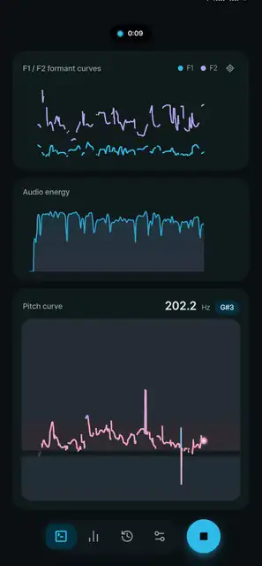
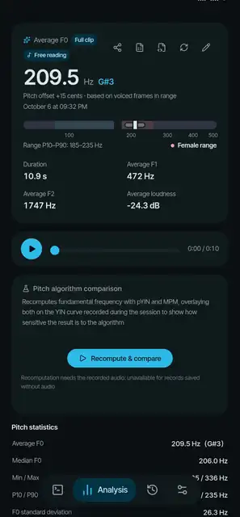

Simple Voice Tool for Trans
صوت وفيديو وموسيقى
Simple Voice Tool for Trans is a serious voice measurement, analysis and training tracker built on the Web Audio API. Speak into your microphone and get pitch, formant and energy analysis in real time — fully offline, nothing leaves your device. Measure Real-time pitch curve with male / female / tra
✓ ترخيص مفتوح (MIT) · آخر تحديث: 2026-11-20
0.11.3الإصدار
3.0 MBالحجم
MITالرخصة
Open in Kanzتحميل APK (3.0 MB)
Download APK
SHA-256: 6f21c6a37dab9a11c6c9b118ad0010a41a34af65d06984e414eb4a8b735b1280


امسح الكود لفتح صفحة التطبيق
Scan to open this app page
لو كنز مش متثبت عندك: نزّل متجر كنز.
Not installed? Get the Kanz store.